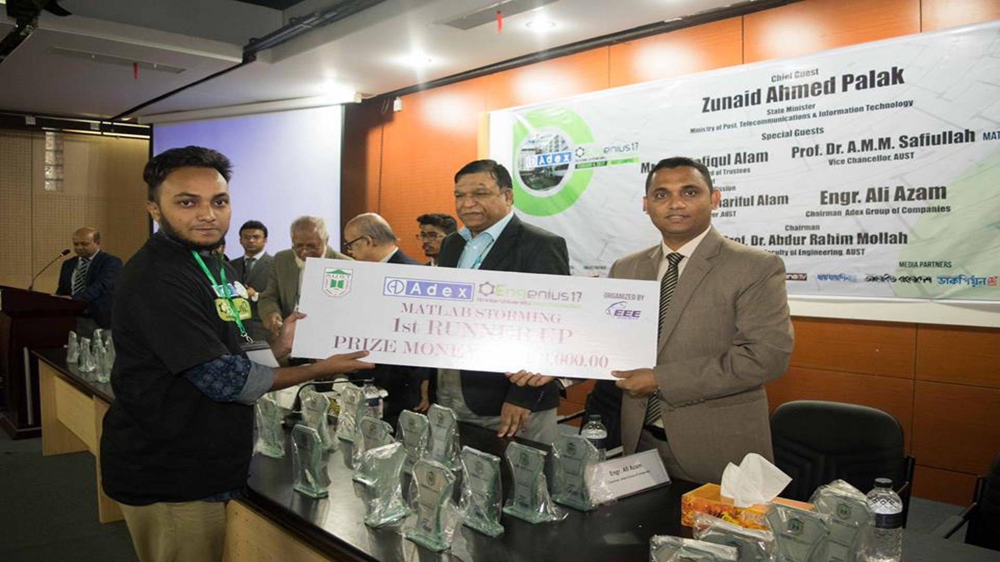

Awards & Achievements


Runner up in Matlab Storming; ENGENIUS, 2017
Instructor, workshop on "Python Simplified: From Basics to Real-World Implementation"; 2025
Treasurer, AUST Programming and Informatics Club; 2022
Instructor, workshop on "Building Standalone Applications Using MATLAB"; 2021
Mentor, IEEE SPS and IEEE ComSoc Joint SBC; 2021
Dean’s List Award for Academic Excellence; 2018
"Perfectly Perfect" award for 100% Attendance from class 1 to class 10; 2011
Junior Scholarship of Government of Bangladesh in Talent pool; 2009
2nd runner up at 1st Gregorian Mathematics Olympiad; 2005
Attended Workshop on Simulink; 2017
General Member, AUST Innovation & Design Club ; April 2017 - March 2018
Member at Gregorian Scouts ; 2002-2003